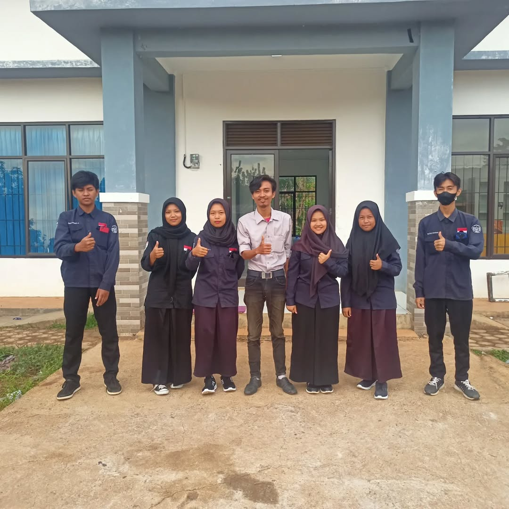
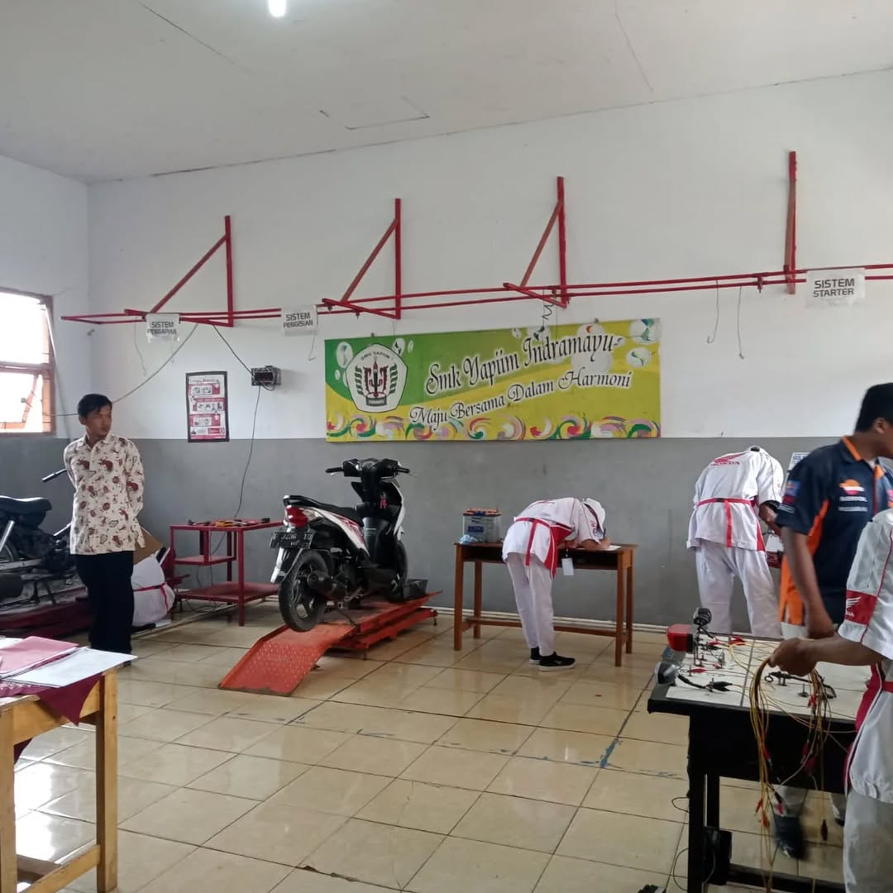
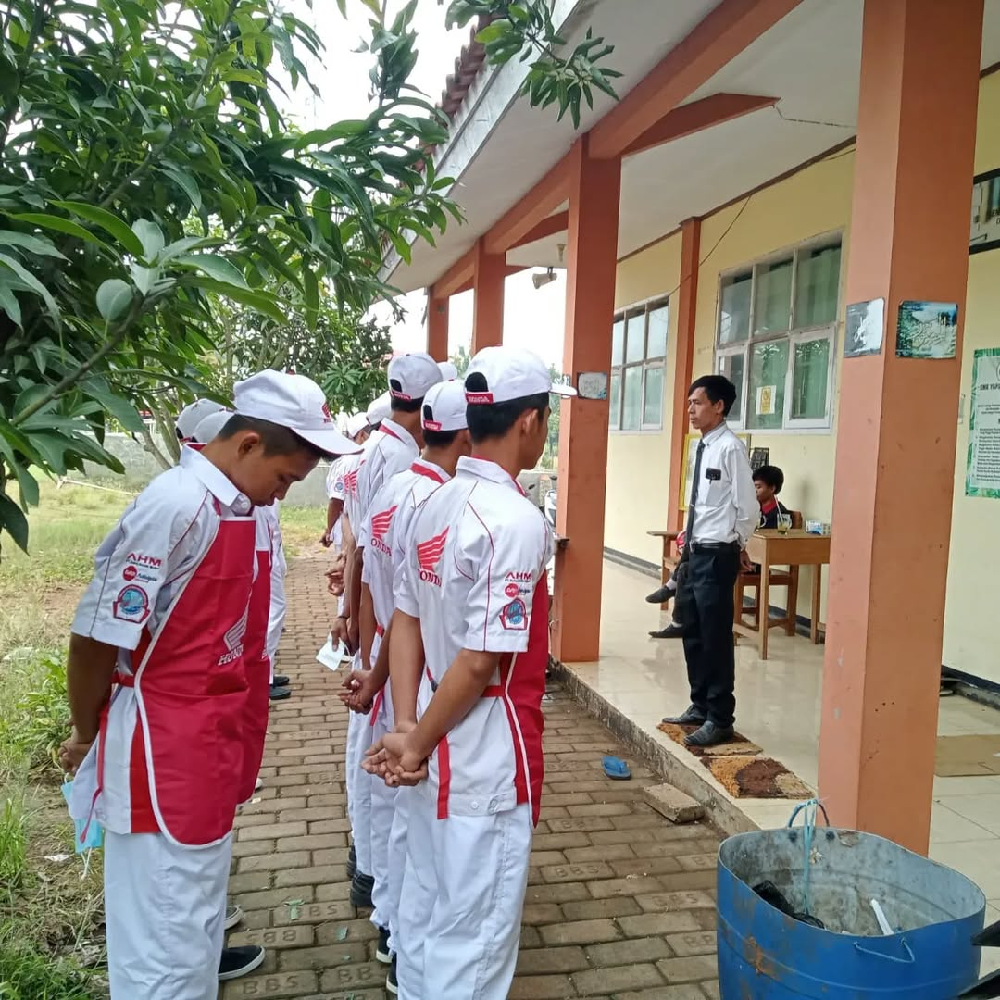
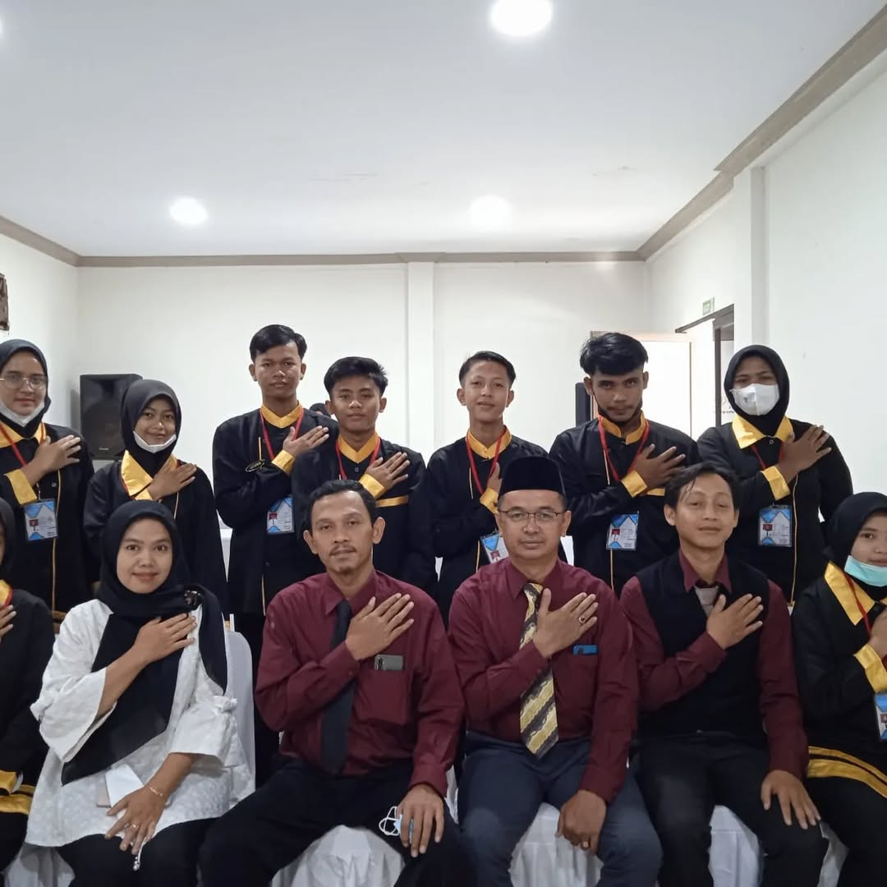
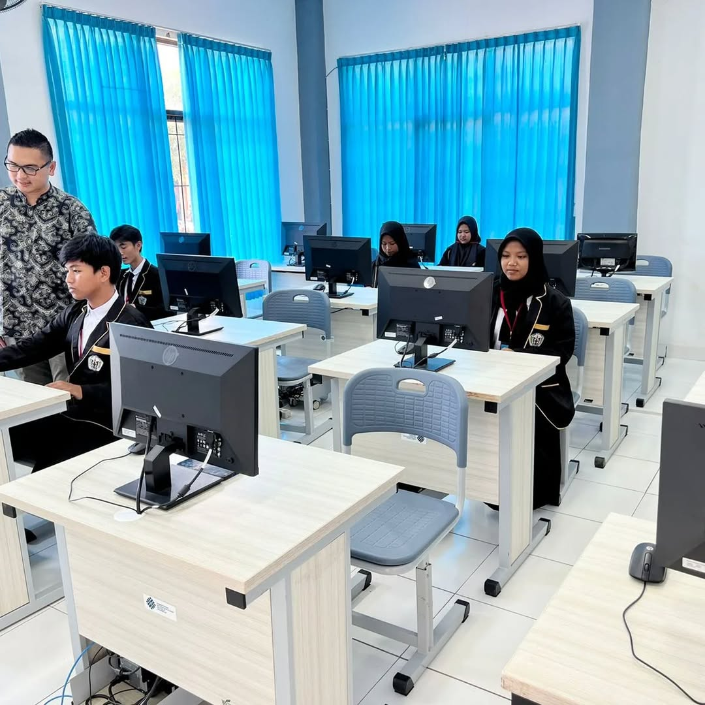
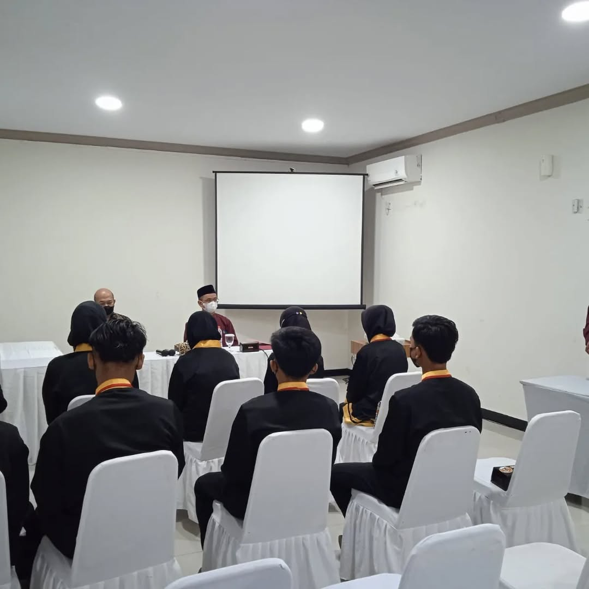
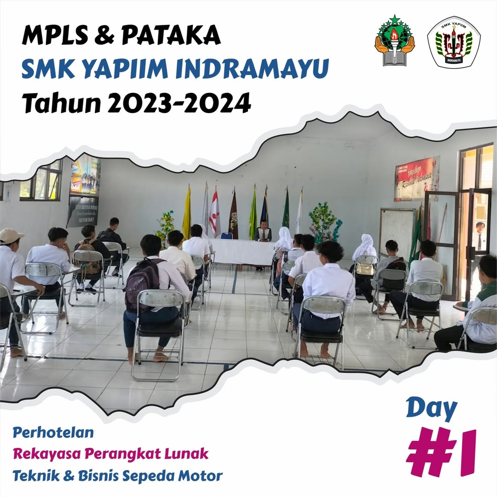

RPL
News

Ujikom TBSM

Ujikom TBSM
Ujikom jurusan TBSM
Uji Kompetensi (Ujikom) pada jurusan Teknik dan Bisnis Sepeda Motor (TBSM) berfungsi untuk mengukur dan menilai kemampuan siswa dalam bidang perawatan, perbaikan, dan diagnosa sepeda motor sesuai standar industri. Ujikom memastikan bahwa siswa memiliki keterampilan teknis yang dibutuhkan dunia kerja, membiasakan mereka dengan prosedur bengkel profesional, serta memberikan sertifikasi kompetensi sebagai bukti kelayakan kerja. Selain itu, ujikom juga menjadi alat evaluasi mutu pembelajaran di sekolah dan meningkatkan daya saing lulusan untuk bekerja di industri otomotif atau membuka usaha sendiri.

PERHOTELAN
Ujikom jurusan PERHOTELAN angkatan 2021


PERHOTELAN
Persiapan untuk ujikom
